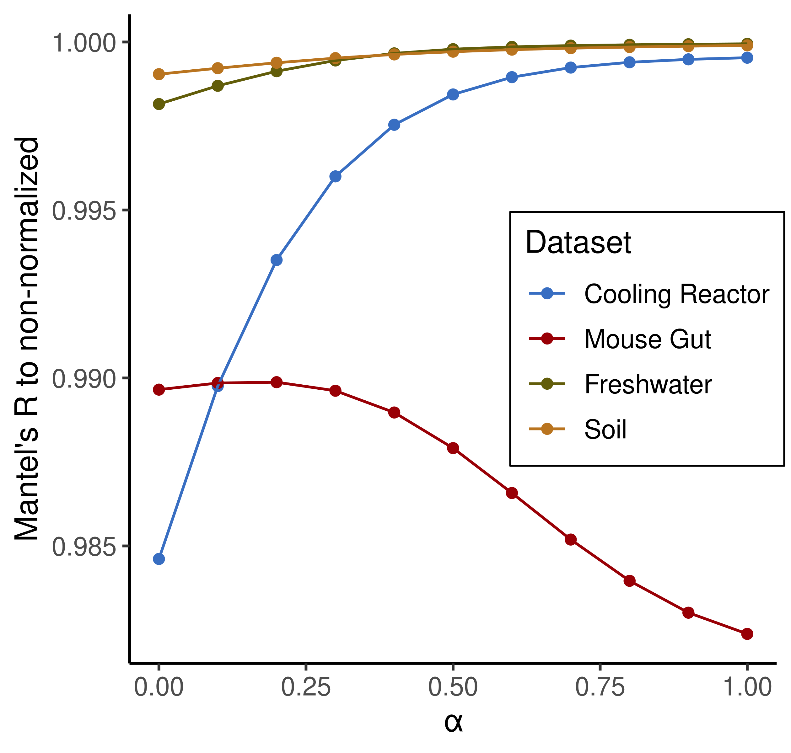
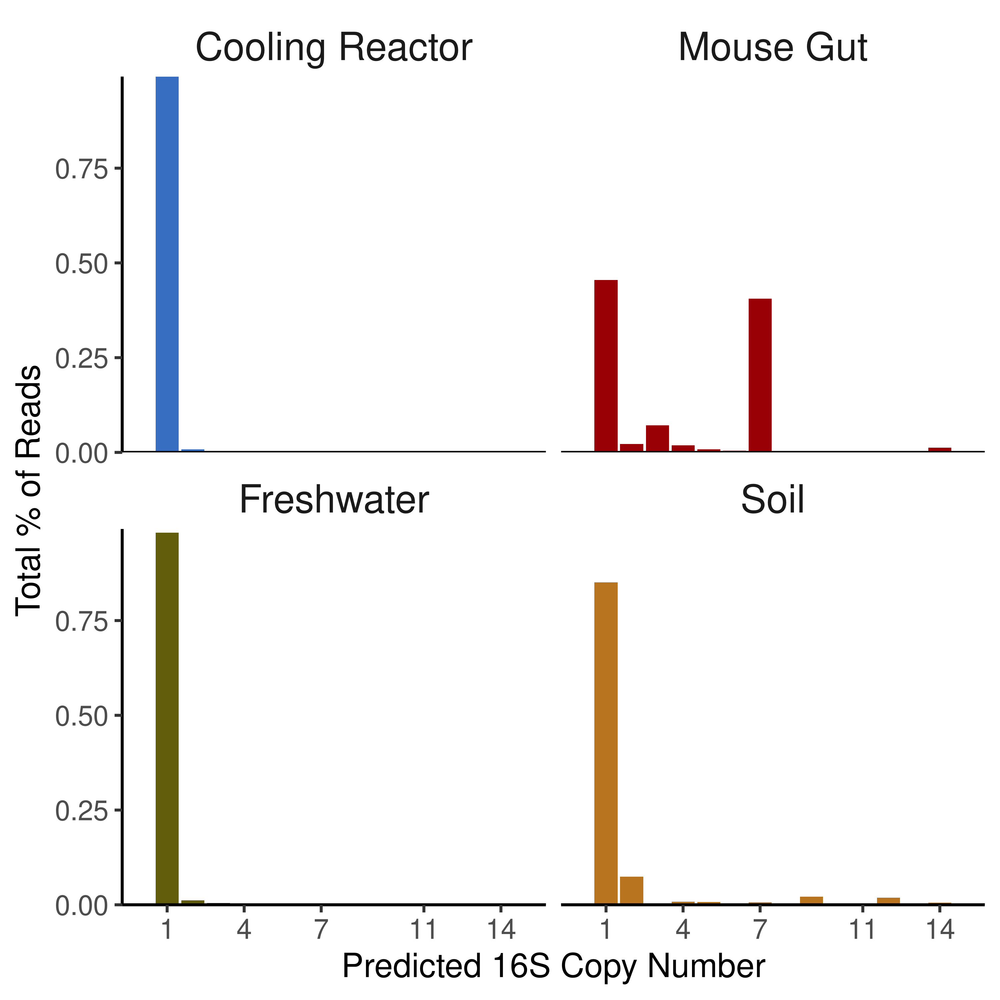

pacman::p_load(phyloseq, vegan, patchwork, GUniFrac, tidyverse)
load("../props_reanalysis/root_physeq.RData")
props_physeq <- root_physeq
load("../barlow_reanalysis/root_physeq.RData")
barlow_physeq <- root_physeq
load("../pendleton_reanalysis/full_diversity_physeq.RData")
pendleton_physeq <- full_diversity_physeq
load("../zhang_reanalysis/trim_physeq.RData")
zhang_physeq <- trim_physeq
source("../code/plotting.R")Checking sensitivity to copy number normalization
Load Data and Packages
Picrust2 Analysis
Exporting data for picrust format
# Export feature/OTU table
# As a biom file
library(biomformat)
packageVersion("biomformat")[1] '1.30.0'## [1] ‘1.30.0’
taxa_are_rows(props_physeq)[1] TRUEprops_otu<-as(otu_table(props_physeq),"matrix") # 't' to transform if taxa_are_rows=FALSE
props_otu_biom <- make_biom(data=props_otu)
write_biom(props_otu_biom,"props/otu_biom.biom")
fasta_export_prep <- data.frame(tax_table(props_physeq)) %>%
mutate(ASV_Fasta = paste0(">", ASV))
seq_fasta <- c(rbind(fasta_export_prep$ASV_Fasta, fasta_export_prep$ASVseqs))
write(x = seq_fasta, file = "props/seqs.fasta")taxa_are_rows(barlow_physeq)[1] TRUEbarlow_otu<-as(otu_table(barlow_physeq),"matrix") # 't' to transform if taxa_are_rows=FALSE
barlow_otu_biom <- make_biom(data=barlow_otu)
write_biom(barlow_otu_biom,"barlow/otu_biom.biom")
fasta_export_prep <- data.frame(tax_table(barlow_physeq)) %>%
mutate(ASV_Fasta = paste0(">", ASV))
seq_fasta <- c(rbind(fasta_export_prep$ASV_Fasta, fasta_export_prep$ASVseqs))
write(x = seq_fasta, file = "barlow/seqs.fasta")taxa_are_rows(pendleton_physeq)[1] FALSEpendleton_otu<-t(as(otu_table(pendleton_physeq),"matrix")) # 't' to transform if taxa_are_rows=FALSE
pendleton_otu_biom <- make_biom(data=pendleton_otu)
write_biom(pendleton_otu_biom,"pendleton/otu_biom.biom")
fasta_export_prep <- data.frame(tax_table(pendleton_physeq)) %>%
mutate(ASV_Fasta = paste0(">", ASV))
seq_fasta <- c(rbind(fasta_export_prep$ASV_Fasta, fasta_export_prep$ASVseqs))
write(x = seq_fasta, file = "pendleton/seqs.fasta")taxa_are_rows(zhang_physeq)[1] TRUEzhang_otu<-as(otu_table(zhang_physeq),"matrix") # 't' to transform if taxa_are_rows=FALSE
zhang_otu_biom <- make_biom(data=zhang_otu)
write_biom(zhang_otu_biom,"zhang/otu_biom.biom")
fasta_export_prep <- data.frame(tax_table(zhang_physeq)) %>%
mutate(ASV_Fasta = paste0(">", ASV))
seq_fasta <- c(rbind(fasta_export_prep$ASV_Fasta, fasta_export_prep$ASVseqs))
write(x = seq_fasta, file = "zhang/seqs.fasta")
wget https://github.com/picrust/picrust2/archive/v2.6.0.tar.gz
tar xvzf v2.6.0.tar.gz
cd picrust2-2.6.0/
# MANUALLY EDITED YAML TO CHANGE ENV NAME
conda env create -f picrust2-env.yaml
conda activate picrust2.6_unifrac
pip install --editable .
cd ..
picrust2_pipeline.py -s props/seqs.fasta -i props/otu_biom.biom -o props/output -p 15 --verbose --no_pathways --skip_minpath --remove_intermediate
picrust2_pipeline.py -s barlow/seqs.fasta -i barlow/otu_biom.biom -o barlow/output -p 15 --verbose --no_pathways --skip_minpath --remove_intermediate
picrust2_pipeline.py -s pendleton/seqs.fasta -i pendleton/otu_biom.biom -o pendleton/output -p 15 --verbose --no_pathways --skip_minpath --remove_intermediate
picrust2_pipeline.py -s zhang/seqs.fasta -i zhang/otu_biom.biom -o zhang/output -p 15 --verbose --no_pathways --skip_minpath --remove_intermediate
conda deactivateReading in Props
props_raw <- read_tsv("props/output/EC_metagenome_out/seqtab_norm.tsv.gz") %>%
column_to_rownames("normalized") %>%
as.matrix() %>%
round()Rows: 215 Columns: 48
── Column specification ────────────────────────────────────────────────────────
Delimiter: "\t"
chr (1): normalized
dbl (47): SRR2917200, SRR2917201, SRR2917202, SRR2917203, SRR2917204, SRR291...
ℹ Use `spec()` to retrieve the full column specification for this data.
ℹ Specify the column types or set `show_col_types = FALSE` to quiet this message.read_tsv("props/output/combined_marker_predicted_and_nsti.tsv.gz") %>%
count(`16S_rRNA_Count`)Rows: 215 Columns: 5
── Column specification ────────────────────────────────────────────────────────
Delimiter: "\t"
chr (3): sequence, best_domain, closest_reference_genome
dbl (2): 16S_rRNA_Count, metadata_NSTI
ℹ Use `spec()` to retrieve the full column specification for this data.
ℹ Specify the column types or set `show_col_types = FALSE` to quiet this message.# A tibble: 7 × 2
`16S_rRNA_Count` n
<dbl> <int>
1 1 190
2 2 18
3 4 3
4 5 1
5 7 1
6 9 1
7 12 1# Percentage of ASV reads that remained the same
sum(props_raw == props_otu[order(row.names(props_otu)), ]) / length(props_raw)[1] 0.9884216dim(props_raw) == dim(props_otu)[1] TRUE TRUErow.names(props_raw) == row.names(props_otu[order(row.names(props_otu)), ]) [1] TRUE TRUE TRUE TRUE TRUE TRUE TRUE TRUE TRUE TRUE TRUE TRUE TRUE TRUE TRUE
[16] TRUE TRUE TRUE TRUE TRUE TRUE TRUE TRUE TRUE TRUE TRUE TRUE TRUE TRUE TRUE
[31] TRUE TRUE TRUE TRUE TRUE TRUE TRUE TRUE TRUE TRUE TRUE TRUE TRUE TRUE TRUE
[46] TRUE TRUE TRUE TRUE TRUE TRUE TRUE TRUE TRUE TRUE TRUE TRUE TRUE TRUE TRUE
[61] TRUE TRUE TRUE TRUE TRUE TRUE TRUE TRUE TRUE TRUE TRUE TRUE TRUE TRUE TRUE
[76] TRUE TRUE TRUE TRUE TRUE TRUE TRUE TRUE TRUE TRUE TRUE TRUE TRUE TRUE TRUE
[91] TRUE TRUE TRUE TRUE TRUE TRUE TRUE TRUE TRUE TRUE TRUE TRUE TRUE TRUE TRUE
[106] TRUE TRUE TRUE TRUE TRUE TRUE TRUE TRUE TRUE TRUE TRUE TRUE TRUE TRUE TRUE
[121] TRUE TRUE TRUE TRUE TRUE TRUE TRUE TRUE TRUE TRUE TRUE TRUE TRUE TRUE TRUE
[136] TRUE TRUE TRUE TRUE TRUE TRUE TRUE TRUE TRUE TRUE TRUE TRUE TRUE TRUE TRUE
[151] TRUE TRUE TRUE TRUE TRUE TRUE TRUE TRUE TRUE TRUE TRUE TRUE TRUE TRUE TRUE
[166] TRUE TRUE TRUE TRUE TRUE TRUE TRUE TRUE TRUE TRUE TRUE TRUE TRUE TRUE TRUE
[181] TRUE TRUE TRUE TRUE TRUE TRUE TRUE TRUE TRUE TRUE TRUE TRUE TRUE TRUE TRUE
[196] TRUE TRUE TRUE TRUE TRUE TRUE TRUE TRUE TRUE TRUE TRUE TRUE TRUE TRUE TRUE
[211] TRUE TRUE TRUE TRUE TRUEcolnames(props_raw) == colnames(props_otu) [1] TRUE TRUE TRUE TRUE TRUE TRUE TRUE TRUE TRUE TRUE TRUE TRUE TRUE TRUE TRUE
[16] TRUE TRUE TRUE TRUE TRUE TRUE TRUE TRUE TRUE TRUE TRUE TRUE TRUE TRUE TRUE
[31] TRUE TRUE TRUE TRUE TRUE TRUE TRUE TRUE TRUE TRUE TRUE TRUE TRUE TRUE TRUE
[46] TRUE TRUEnorm_physeq <- props_physeq
norm_physeq@otu_table <- NULL
norm_physeq@otu_table <- otu_table(props_raw, taxa_are_rows = TRUE)
mat_list <- list(Standard = props_physeq,
Normalized = norm_physeq)
source("../code/generate_rarefied_abs_tables.R")Loading required package: abind
Loading required package: extraDistr
Attaching package: 'extraDistr'
The following object is masked from 'package:purrr':
rdunifcell_counts_prep <-
props_physeq %>%
sample_data %>%
data.frame %>%
select(sample, Sample_Sum = cell_per_ml)
cell_counts <- cell_counts_prep$Sample_Sum
names(cell_counts) = cell_counts_prep$sample
rarefaction_limit <- min(c(sample_sums(props_physeq), sample_sums(norm_physeq)))
tables <-
map(mat_list, \(x){
generate_rarefied_abs_tables(physeq = x,
iterations = 10,
rare.depth = rarefaction_limit,
abs.counts = cell_counts,
seed = 314,
return_rel = FALSE)
}
)
dims <- dim(tables[[1]])
dists <-
map(tables, \(table){
map(c(1:dims[2]),
\(x)GUniFrac(otu.tab = table[,x,],
tree = phy_tree(props_physeq),
alpha = seq(from = 0, to = 1, by = 0.1),
normalize_counts = FALSE,
verbose = FALSE))
})
gun_names <- c("d_UW","d_0","d_0.1","d_0.2","d_0.3","d_0.4","d_0.5","d_0.6","d_0.7","d_0.8","d_0.9","d_1")
names(gun_names) <- gun_names
unifracs <-
map(dists, \(ddd){
map(gun_names, \(x){
dist_objs <- map(ddd,
\(y)as.dist(y$unifracs[,,x]))
Reduce(`+`, dist_objs) / length(dist_objs)
})
})
props_unifrac_res <-
map2(unifracs[[1]], unifracs[[2]], \(x,y){
mantels <- mantel(x, y, permutations = 999)$statistic
}) %>% unlist() %>%
bind_rows() %>%
select(-d_UW) %>%
pivot_longer(d_0:d_1, names_to = "alpha", values_to = "mR") %>%
mutate(alpha = as.numeric(str_remove(alpha, "d_")),
Dataset = "Cooling Reactor")
props_unifrac_res# A tibble: 11 × 3
alpha mR Dataset
<dbl> <dbl> <chr>
1 0 0.985 Cooling Reactor
2 0.1 0.990 Cooling Reactor
3 0.2 0.994 Cooling Reactor
4 0.3 0.996 Cooling Reactor
5 0.4 0.998 Cooling Reactor
6 0.5 0.998 Cooling Reactor
7 0.6 0.999 Cooling Reactor
8 0.7 0.999 Cooling Reactor
9 0.8 0.999 Cooling Reactor
10 0.9 0.999 Cooling Reactor
11 1 1.000 Cooling ReactorReading in Barlow
barlow_raw <- read_tsv("barlow/output/EC_metagenome_out/seqtab_norm.tsv.gz") %>%
column_to_rownames("normalized") %>%
as.matrix() %>%
round()Rows: 885 Columns: 94
── Column specification ────────────────────────────────────────────────────────
Delimiter: "\t"
chr (1): normalized
dbl (93): SRR10217991, SRR10217992, SRR10217993, SRR10217994, SRR10217995, S...
ℹ Use `spec()` to retrieve the full column specification for this data.
ℹ Specify the column types or set `show_col_types = FALSE` to quiet this message.read_tsv("barlow/output/combined_marker_predicted_and_nsti.tsv.gz") %>%
count(`16S_rRNA_Count`)Rows: 885 Columns: 5
── Column specification ────────────────────────────────────────────────────────
Delimiter: "\t"
chr (3): sequence, best_domain, closest_reference_genome
dbl (2): 16S_rRNA_Count, metadata_NSTI
ℹ Use `spec()` to retrieve the full column specification for this data.
ℹ Specify the column types or set `show_col_types = FALSE` to quiet this message.# A tibble: 9 × 2
`16S_rRNA_Count` n
<dbl> <int>
1 1 804
2 2 23
3 3 10
4 4 3
5 5 13
6 6 11
7 7 17
8 9 1
9 14 3# Percentage of ASV reads that remained the same
sum(barlow_raw == barlow_otu[order(row.names(barlow_otu)), ]) / length(barlow_raw)[1] 0.9768908dim(barlow_raw) == dim(barlow_otu)[1] TRUE TRUEall(row.names(barlow_raw) == row.names(barlow_otu[order(row.names(barlow_otu)), ]))[1] TRUEall(colnames(barlow_raw) == colnames(barlow_otu))[1] TRUEnorm_physeq <- barlow_physeq
norm_physeq@otu_table <- NULL
norm_physeq@otu_table <- otu_table(barlow_raw, taxa_are_rows = TRUE)
mat_list <- list(Standard = barlow_physeq,
Normalized = norm_physeq)
source("../code/generate_rarefied_abs_tables.R")
cell_counts_prep <-
barlow_physeq %>%
sample_data %>%
data.frame %>%
select(sample, Sample_Sum)
cell_counts <- cell_counts_prep$Sample_Sum
names(cell_counts) = cell_counts_prep$sample
rarefaction_limit <- min(c(sample_sums(norm_physeq),sample_sums(barlow_physeq)))
tables <-
map(mat_list, \(x){
generate_rarefied_abs_tables(physeq = x,
iterations = 10,
rare.depth = rarefaction_limit,
abs.counts = cell_counts,
seed = 314,
return_rel = FALSE)
}
)
dims <- dim(tables[[1]])
# dists <-
# map(tables, \(table){
# map(c(1:dims[2]),
# \(x)GUniFrac(otu.tab = table[,x,],
# tree = phy_tree(barlow_physeq),
# alpha = seq(from = 0, to = 1, by = 0.1),
# normalize_counts = FALSE,
# verbose = FALSE))
# })
#
# save(dists, file = "barlow/dists.RData")
load("barlow/dists.RData")
gun_names <- c("d_UW","d_0","d_0.1","d_0.2","d_0.3","d_0.4","d_0.5","d_0.6","d_0.7","d_0.8","d_0.9","d_1")
names(gun_names) <- gun_names
unifracs <-
map(dists, \(ddd){
map(gun_names, \(x){
dist_objs <- map(ddd,
\(y)as.dist(y$unifracs[,,x]))
Reduce(`+`, dist_objs) / length(dist_objs)
})
})
barlow_unifrac_res <-
map2(unifracs[[1]], unifracs[[2]], \(x,y){
mantels <- mantel(x, y, permutations = 999)$statistic
}) %>% unlist() %>%
bind_rows() %>%
select(-d_UW) %>%
pivot_longer(d_0:d_1, names_to = "alpha", values_to = "mR") %>%
mutate(alpha = as.numeric(str_remove(alpha, "d_")),
Dataset = "Mouse Gut")
barlow_unifrac_res# A tibble: 11 × 3
alpha mR Dataset
<dbl> <dbl> <chr>
1 0 0.990 Mouse Gut
2 0.1 0.990 Mouse Gut
3 0.2 0.990 Mouse Gut
4 0.3 0.990 Mouse Gut
5 0.4 0.989 Mouse Gut
6 0.5 0.988 Mouse Gut
7 0.6 0.987 Mouse Gut
8 0.7 0.985 Mouse Gut
9 0.8 0.984 Mouse Gut
10 0.9 0.983 Mouse Gut
11 1 0.982 Mouse GutReading in Pendleton
pendleton_raw <- read_tsv("pendleton/output/EC_metagenome_out/seqtab_norm.tsv.gz") %>%
column_to_rownames("normalized") %>%
as.matrix() %>%
round()Rows: 7218 Columns: 73
── Column specification ────────────────────────────────────────────────────────
Delimiter: "\t"
chr (1): normalized
dbl (72): May_12_B, May_12_E, May_12_M, May_17_E, May_29_B, May_29_E, May_29...
ℹ Use `spec()` to retrieve the full column specification for this data.
ℹ Specify the column types or set `show_col_types = FALSE` to quiet this message.read_tsv("pendleton/output/combined_marker_predicted_and_nsti.tsv.gz") %>%
count(`16S_rRNA_Count`)Rows: 7275 Columns: 5
── Column specification ────────────────────────────────────────────────────────
Delimiter: "\t"
chr (3): sequence, best_domain, closest_reference_genome
dbl (2): 16S_rRNA_Count, metadata_NSTI
ℹ Use `spec()` to retrieve the full column specification for this data.
ℹ Specify the column types or set `show_col_types = FALSE` to quiet this message.# A tibble: 13 × 2
`16S_rRNA_Count` n
<dbl> <int>
1 1 6497
2 2 554
3 3 114
4 4 38
5 5 26
6 6 19
7 7 18
8 8 1
9 9 2
10 10 1
11 11 2
12 12 2
13 14 1dim(pendleton_raw) == dim(pendleton_otu)[1] FALSE TRUE# Some ASVs were dropped during PICRUST, likely as a result of poor alignment to reference sequences
dropped_asvs <- row.names(pendleton_otu)[!row.names(pendleton_otu) %in% row.names(pendleton_raw)]
length(dropped_asvs)[1] 61all(colnames(pendleton_raw) == colnames(pendleton_otu))[1] TRUEnorm_physeq <- pendleton_physeq
norm_physeq@otu_table <- NULL
norm_physeq@otu_table <- otu_table(pendleton_raw, taxa_are_rows = TRUE)
mat_list <- list(Standard = pendleton_physeq,
Normalized = norm_physeq)
source("../code/generate_rarefied_abs_tables.R")
cell_counts_prep <-
pendleton_physeq %>%
sample_data %>%
data.frame %>%
select(sample = Rep_ID, Sample_Sum = avg_cells_per_ml)
cell_counts <- cell_counts_prep$Sample_Sum
names(cell_counts) = cell_counts_prep$sample
rarefaction_limit <- min(c(sample_sums(norm_physeq), sample_sums(pendleton_physeq)))
tables <-
map(mat_list, \(x){
generate_rarefied_abs_tables(physeq = x,
iterations = 10,
rare.depth = rarefaction_limit,
abs.counts = cell_counts,
seed = 314,
return_rel = FALSE)
}
)
dims <- dim(tables[[1]])
# dists <-
# map(tables, \(table){
# map(c(1:dims[2]),
# \(x)GUniFrac(otu.tab = table[,x,],
# tree = phy_tree(pendleton_physeq),
# alpha = seq(from = 0, to = 1, by = 0.1),
# normalize_counts = FALSE,
# verbose = FALSE))
# })
#
# save(dists, file = "pendleton/dists.RData")
load("pendleton/dists.RData")
gun_names <- c("d_UW","d_0","d_0.1","d_0.2","d_0.3","d_0.4","d_0.5","d_0.6","d_0.7","d_0.8","d_0.9","d_1")
names(gun_names) <- gun_names
unifracs <-
map(dists, \(ddd){
map(gun_names, \(x){
dist_objs <- map(ddd,
\(y)as.dist(y$unifracs[,,x]))
Reduce(`+`, dist_objs) / length(dist_objs)
})
})
pendleton_unifrac_res <-
map2(unifracs[[1]], unifracs[[2]], \(x,y){
mantels <- mantel(x, y, permutations = 999)$statistic
}) %>% unlist() %>%
bind_rows() %>%
select(-d_UW) %>%
pivot_longer(d_0:d_1, names_to = "alpha", values_to = "mR") %>%
mutate(alpha = as.numeric(str_remove(alpha, "d_")),
Dataset = "Freshwater")
pendleton_unifrac_res# A tibble: 11 × 3
alpha mR Dataset
<dbl> <dbl> <chr>
1 0 0.998 Freshwater
2 0.1 0.999 Freshwater
3 0.2 0.999 Freshwater
4 0.3 0.999 Freshwater
5 0.4 1.000 Freshwater
6 0.5 1.000 Freshwater
7 0.6 1.000 Freshwater
8 0.7 1.000 Freshwater
9 0.8 1.000 Freshwater
10 0.9 1.000 Freshwater
11 1 1.000 FreshwaterReading in Zhang
zhang_raw <- read_tsv("zhang/output/EC_metagenome_out/seqtab_norm.tsv.gz") %>%
column_to_rownames("normalized") %>%
as.matrix() %>%
round()Rows: 24101 Columns: 37
── Column specification ────────────────────────────────────────────────────────
Delimiter: "\t"
chr (1): normalized
dbl (36): SRR18309615, SRR18309616, SRR18309619, SRR18309630, SRR18309641, S...
ℹ Use `spec()` to retrieve the full column specification for this data.
ℹ Specify the column types or set `show_col_types = FALSE` to quiet this message.read_tsv("zhang/output/combined_marker_predicted_and_nsti.tsv.gz") %>%
count(`16S_rRNA_Count`)Rows: 24123 Columns: 5
── Column specification ────────────────────────────────────────────────────────
Delimiter: "\t"
chr (3): sequence, best_domain, closest_reference_genome
dbl (2): 16S_rRNA_Count, metadata_NSTI
ℹ Use `spec()` to retrieve the full column specification for this data.
ℹ Specify the column types or set `show_col_types = FALSE` to quiet this message.# A tibble: 15 × 2
`16S_rRNA_Count` n
<dbl> <int>
1 1 20735
2 2 2067
3 3 119
4 4 473
5 5 275
6 6 51
7 7 129
8 8 28
9 9 108
10 10 9
11 11 14
12 12 105
13 13 3
14 14 5
15 27 2# Okay, who
# Also lost some ASVs to alignment here
dim(zhang_raw) == dim(zhang_otu)[1] FALSE TRUEnorm_physeq <- zhang_physeq
norm_physeq@otu_table <- NULL
norm_physeq@otu_table <- otu_table(zhang_raw, taxa_are_rows = TRUE)
mat_list <- list(Standard = zhang_physeq,
Normalized = norm_physeq)
source("../code/generate_rarefied_abs_tables.R")
cell_counts_prep <-
zhang_physeq %>%
sample_data %>%
data.frame %>%
select(sample, Sample_Sum)
cell_counts <- cell_counts_prep$Sample_Sum
names(cell_counts) = cell_counts_prep$sample
rarefaction_limit <- min(c(sample_sums(norm_physeq), sample_sums(zhang_physeq)))
tables <-
map(mat_list, \(x){
generate_rarefied_abs_tables(physeq = x,
iterations = 10,
rare.depth = rarefaction_limit,
abs.counts = cell_counts,
seed = 314,
return_rel = FALSE)
}
)
dims <- dim(tables[[1]])
# dists <-
# map(tables, \(table){
# map(c(1:dims[2]),
# \(x)GUniFrac(otu.tab = table[,x,],
# tree = phy_tree(zhang_physeq),
# alpha = seq(from = 0, to = 1, by = 0.1),
# normalize_counts = FALSE,
# verbose = FALSE))
# })
#
# save(dists, file = "zhang/dists.RData")
load("zhang/dists.RData")
gun_names <- c("d_UW","d_0","d_0.1","d_0.2","d_0.3","d_0.4","d_0.5","d_0.6","d_0.7","d_0.8","d_0.9","d_1")
names(gun_names) <- gun_names
unifracs <-
map(dists, \(ddd){
map(gun_names, \(x){
dist_objs <- map(ddd,
\(y)as.dist(y$unifracs[,,x]))
Reduce(`+`, dist_objs) / length(dist_objs)
})
})
zhang_unifrac_res <-
map2(unifracs[[1]], unifracs[[2]], \(x,y){
mantels <- mantel(x, y, permutations = 999)$statistic
}) %>% unlist() %>%
bind_rows() %>%
select(-d_UW) %>%
pivot_longer(d_0:d_1, names_to = "alpha", values_to = "mR") %>%
mutate(alpha = as.numeric(str_remove(alpha, "d_")),
Dataset = "Soil")
zhang_unifrac_res# A tibble: 11 × 3
alpha mR Dataset
<dbl> <dbl> <chr>
1 0 0.999 Soil
2 0.1 0.999 Soil
3 0.2 0.999 Soil
4 0.3 1.000 Soil
5 0.4 1.000 Soil
6 0.5 1.000 Soil
7 0.6 1.000 Soil
8 0.7 1.000 Soil
9 0.8 1.000 Soil
10 0.9 1.000 Soil
11 1 1.000 Soil Collate Results
rbind(props_unifrac_res, barlow_unifrac_res, pendleton_unifrac_res, zhang_unifrac_res) %>%
mutate(Dataset = factor(Dataset, levels = c("Cooling Reactor", "Mouse Gut", "Freshwater", "Soil"))) %>%
ggplot(aes(x = alpha, y = mR, group = Dataset, color = Dataset)) +
geom_point() +
geom_line() +
scale_color_manual(values = triglav[c(1,3,4,5)]) +
labs(x = "\u03b1", y = "Mantel's R to non-normalized", color = "Dataset")+
theme(legend.position = "inside",
legend.position.inside= c(0.8,0.5))
Just to confirm the ASV abundances ARE changing
big_cn_asvs <- read_tsv("zhang/output/combined_marker_predicted_and_nsti.tsv.gz") %>%
slice_max(`16S_rRNA_Count`)Rows: 24123 Columns: 5
── Column specification ────────────────────────────────────────────────────────
Delimiter: "\t"
chr (3): sequence, best_domain, closest_reference_genome
dbl (2): 16S_rRNA_Count, metadata_NSTI
ℹ Use `spec()` to retrieve the full column specification for this data.
ℹ Specify the column types or set `show_col_types = FALSE` to quiet this message.big_cn_asvs <- read_tsv("zhang/output/combined_marker_predicted_and_nsti.tsv.gz") %>%
slice_max(`16S_rRNA_Count`) %>% pull(sequence)Rows: 24123 Columns: 5
── Column specification ────────────────────────────────────────────────────────
Delimiter: "\t"
chr (3): sequence, best_domain, closest_reference_genome
dbl (2): 16S_rRNA_Count, metadata_NSTI
ℹ Use `spec()` to retrieve the full column specification for this data.
ℹ Specify the column types or set `show_col_types = FALSE` to quiet this message.norm_asv_sums <- rowSums(zhang_raw)
nonnorm_asv_sums <- rowSums(zhang_otu)
norm_asv_sums[big_cn_asvs]ASV_17497 ASV_2375
0 5 nonnorm_asv_sums[big_cn_asvs]ASV_17497 ASV_2375
9 184 Okay, yes, it is actually doing something, I promise!
Percentage of community with copy number >1
count_list <- list(Cooling = "props/output/combined_marker_predicted_and_nsti.tsv.gz",
Gut = "barlow/output/combined_marker_predicted_and_nsti.tsv.gz",
Water = "pendleton/output/combined_marker_predicted_and_nsti.tsv.gz",
Soil = "zhang/output/combined_marker_predicted_and_nsti.tsv.gz")
rowsums_list <- list(Cooling = rowSums(props_otu),
Gut = rowSums(barlow_otu),
Water = rowSums(pendleton_otu),
Soil = rowSums(zhang_otu))
cn2_asvs <- map(count_list, \(x){
read_tsv(x) %>%
rename(copyn = `16S_rRNA_Count`) %>%
select(copyn, sequence) %>%
group_by(copyn) %>%
summarize(asv_list = list(sequence))
})Rows: 215 Columns: 5
── Column specification ────────────────────────────────────────────────────────
Delimiter: "\t"
chr (3): sequence, best_domain, closest_reference_genome
dbl (2): 16S_rRNA_Count, metadata_NSTI
ℹ Use `spec()` to retrieve the full column specification for this data.
ℹ Specify the column types or set `show_col_types = FALSE` to quiet this message.
Rows: 885 Columns: 5
── Column specification ────────────────────────────────────────────────────────
Delimiter: "\t"
chr (3): sequence, best_domain, closest_reference_genome
dbl (2): 16S_rRNA_Count, metadata_NSTI
ℹ Use `spec()` to retrieve the full column specification for this data.
ℹ Specify the column types or set `show_col_types = FALSE` to quiet this message.
Rows: 7275 Columns: 5
── Column specification ────────────────────────────────────────────────────────
Delimiter: "\t"
chr (3): sequence, best_domain, closest_reference_genome
dbl (2): 16S_rRNA_Count, metadata_NSTI
ℹ Use `spec()` to retrieve the full column specification for this data.
ℹ Specify the column types or set `show_col_types = FALSE` to quiet this message.
Rows: 24123 Columns: 5
── Column specification ────────────────────────────────────────────────────────
Delimiter: "\t"
chr (3): sequence, best_domain, closest_reference_genome
dbl (2): 16S_rRNA_Count, metadata_NSTI
ℹ Use `spec()` to retrieve the full column specification for this data.
ℹ Specify the column types or set `show_col_types = FALSE` to quiet this message.cleaned_percentage <- map2(cn2_asvs, rowsums_list, \(x,y){
x %>%
rowwise() %>%
mutate(count_sum = sum(y[asv_list])) %>%
ungroup() %>%
mutate(count_perc = count_sum / sum(count_sum))
}) %>%
bind_rows(.id = "Dataset")
cleaned_percentage %>%
mutate(Dataset = factor(Dataset,
levels = c("Cooling","Gut","Water","Soil"),
labels = c("Cooling Reactor", "Mouse Gut", "Freshwater", "Soil"))) %>%
ggplot(aes(x = copyn, y = count_perc, fill = Dataset)) +
geom_col() +
facet_wrap(~Dataset) +
scale_fill_manual(values = triglav[c(1,3,4,5)]) +
scale_x_continuous(limits = c(0, 15), breaks = c(1,4,7,11,14)) +
scale_y_continuous(expand = expansion(mult = 0)) +
annotate(geom = "segment", x = -Inf, xend = Inf, y = 0, yend = 0) +
labs(x = "Predicted Copy Number", y = "Total % of Reads") +
theme(strip.text = element_text(size = 14),
legend.position = "none")Warning: Removed 1 row containing missing values or values outside the scale range
(`geom_col()`).
barlow_big_asvs <- cn2_asvs$Gut %>%
filter(copyn == 7) %>%
pull(asv_list) %>%
unlist()
barlow_physeq %>%
tax_table() %>%
data.frame() %>%
filter(ASV %in% barlow_big_asvs) %>%
select(-ASVseqs) %>%
left_join(data.frame(Sums = rowsums_list$Gut[barlow_big_asvs],
ASV = names(rowsums_list$Gut[barlow_big_asvs]))) %>%
arrange(desc(Sums))Joining with `by = join_by(ASV)` Kingdom Phylum Class Order
1 Bacteria Bacillota Bacilli Erysipelotrichales
2 Bacteria Bacillota Bacilli Erysipelotrichales
3 Bacteria Bacillota Bacilli Erysipelotrichales
4 Bacteria Pseudomonadota Gammaproteobacteria Enterobacterales
5 Bacteria Bacillota Bacilli Erysipelotrichales
6 Bacteria Bacillota Bacilli Erysipelotrichales
7 Bacteria Bacillota Bacilli Erysipelotrichales
8 Bacteria Bacillota Bacilli Erysipelotrichales
9 Bacteria Bacillota Bacilli Erysipelotrichales
10 Bacteria Bacillota Bacilli Erysipelotrichales
11 Bacteria Bacillota Bacilli Erysipelotrichales
12 Bacteria Bacillota Bacilli Erysipelotrichales
13 Bacteria Bacillota Bacilli Erysipelotrichales
14 Bacteria Bacillota Bacilli Erysipelotrichales
15 Bacteria Bacillota Bacilli Erysipelotrichales
16 Bacteria Bacillota Bacilli Erysipelotrichales
17 Bacteria Bacillota Clostridia Clostridia UCG-014
Family Genus ASV Sums
1 Erysipelotrichaceae Faecalibaculum ASV_1 3880642
2 Erysipelotrichaceae Faecalibaculum ASV_10 100664
3 Erysipelotrichaceae Faecalibaculum ASV_21 52372
4 Enterobacteriaceae Escherichia-Shigella ASV_85 7602
5 Erysipelotrichaceae Faecalibaculum ASV_103 5084
6 Erysipelotrichaceae Faecalibaculum ASV_307 1088
7 Erysipelotrichaceae Faecalibaculum ASV_456 414
8 Erysipelotrichaceae Faecalibaculum ASV_524 272
9 Erysipelotrichaceae Faecalibaculum ASV_578 185
10 Erysipelotrichaceae Faecalibaculum ASV_611 142
11 Erysipelotrichaceae Faecalibaculum ASV_648 99
12 Erysipelotrichaceae Faecalibaculum ASV_671 83
13 Erysipelotrichaceae Faecalibaculum ASV_684 76
14 Erysipelotrichaceae Faecalibaculum ASV_702 63
15 Erysipelotrichaceae Faecalibaculum ASV_753 34
16 Erysipelotrichaceae Faecalibaculum ASV_784 25
17 <NA> <NA> ASV_794 23